Yes — information density varies by depth, and the middle layers are the most information-dense (least redundant), the first layer the most redundant. This holds at both scales (3 seeds each) in the cleanest signal, eval-time slice sensitivity. But a key nuance from the reliability audit: the training-time 'fragility' is really a learning-disruption / underfitting effect (gen_gap is constant across all 18 noise runs, Δval ≈ Δtrain), not a pure information-loss effect — and its depth profile (8L: first layer worst; 16L: last layer worst) is scale-dependent and does not match the density profile. The models are also undertrained (~0.3–0.4 epochs of the 531M-token corpus), so the fragility is measured in the early-learning regime.
01The question
Hypothesis: noise injected into the residual stream during training hurts more in the middle layers than at the ends, because middle layers carry the least redundant information. Early layers do local, re-computable feature work; late layers do readout that the loss pins down directly. If that picture is right, the stream should be least able to absorb damage in the middle.
Question I'm actually trying to answer: does the model's information density vary by depth? That is, if you corrupt one slice of the residual stream, is the cost uniform across depth — or is there a depth at which the stream holds irreplaceable information?
Why noise is the right probe: the damage a perturbation does to final predictions is a direct measure of how much of the model's function depends on that slice of the stream. And why training-time noise rather than test-time: at test time the model has no choice but to use what is there; during training it can (in principle) route around a noisy slice — so a training-time probe measures what the stream slice is doing, not just what it holds on one forward pass.
The honest null: on a ~1 MB corpus where every model overfits or nearly does, Gaussian noise is also a generic regulariser. Under that null, where you inject should not matter — only how much. Any depth pattern that survives is density; any uniform effect is regularisation. This study is designed to tell the two apart (global-noise controls, gen_gap, dose normalisation).
02The rig
Two model sizes on the same corpus, so a depth pattern must survive a 5× increase in depth and width to count as real. Everything else (data, budget, schedule) is held fixed between variants.
| M | D | |
|---|---|---|
| layers / width / heads | 8 / 512 / 6 | 16 / 768 / 12 |
| params (non-emb) | 25.3M | 149M |
| tokens / run | 163.8M (~104× corpus) | 196.6M (~124× corpus) |
| schedule | cosine to 0, 1000 warmup, batch 32×512, AdamW, bf16 | |
| corpus | edu_mix — 1.56M tokens of English education prose (train 1.28M / val 283K), BPE vocab 8192 | |
One plugin, three lines of intent
Injection is a registered after_attn insert: Gaussian noise whose std is
sigma × RMS(stream) at that point in the stack, applied only when ctx.training.
Scaling by the local RMS makes "sigma=0.3" mean the same thing at layer 0 and layer 15 (the stream's RMS grows
~250× across depth — see §6), and training-only means the evaluated model is clean: we measure what the noise
taught, not what it blocked.
Each variant = one (layer, sigma) pair: inserts=[{site: after_attn, name: rms_noise, layers: L, sigma: s}].
"Global" control = the same per-layer sigma on all layers at once, so we can ask whether damage
scales with dose (n layers × s) or with location.
The sweep
| cell | variants | seeds | runs | purpose |
|---|
| cell | variants | seeds | runs | purpose |
|---|---|---|---|---|
| core (plain + first/mid/last × σ∈{0.1,0.3,1.0}) | 3 | 30 per size | the hypothesis test | |
| profile (every layer L × σ∈{0.3,1.0}) | 1 | 16 per size | the full fragility curve | |
| global (all layers × σ∈{0.1,0.3,1.0}) | 1 | 3 per size | pure-dose / regulariser control |
Metrics per run: val_bpb (evaluated without noise),
gen_gap = val_loss − train_loss, full eval suite; on selected runs: per-layer ablation
(ablate_dloss), logit-lens loss curves, stream RMS profiles. 114 runs total,
~6h wall on 3 GPUs.
03How big is seed noise, really?
Before reading any effect, the floor: the spread of val_bpb across the three plain seeds.
Any layer effect smaller than this is just sampling.
This floor is the ruler for the rest of the blog. Effects are quoted in bpb and in "floor units".
04Where does the noise hurt?
Delta = val_bpb(noise at layer L) − val_bpb(plain), same sigma, same budget.
Green band = seed noise floor.
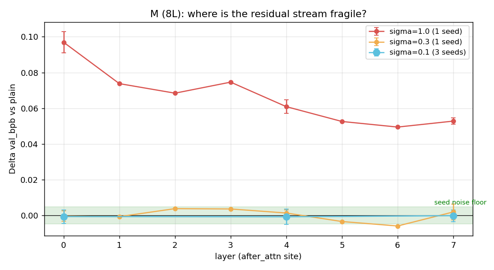
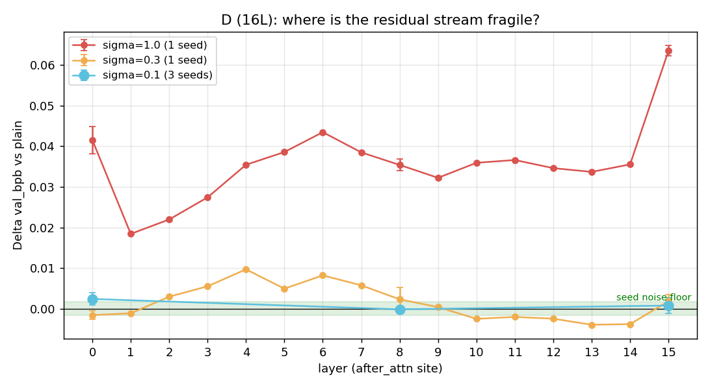
The anchor comparison, paired over seeds
Positive d(first)−d(mid) means the middle is more fragile (the hypothesis); positive d(last)−d(mid) means the end is more fragile (against it).
M (8L)
| sigma | Δ first | Δ mid | Δ last | d(first)−d(mid) | d(last)−d(mid) | mid vs first | mid vs last | |Δ|/floor (f−m) | |Δ|/floor (l−m) |
|---|---|---|---|---|---|---|---|---|---|
| sig10 | -0.0007 | -0.0008 | -0.0002 | +0.0001 | +0.0006 | first worse | mid worse | +0.02× | +0.12× |
| sig100 | +0.0969 | +0.0609 | +0.0528 | +0.0360 | -0.0081 | mid worse | last worse | +7.32× | -1.64× |
| sig30 | -0.0004 | +0.0013 | +0.0019 | -0.0018 | +0.0006 | first worse | mixed | -0.36× | +0.12× |
Paired over the 3 core seeds where available. d(first)−d(mid) > 0 = middle more fragile (hypothesis); d(last)−d(mid) > 0 = last more fragile than middle (against it).
D (16L)
| sigma | Δ first | Δ mid | Δ last | d(first)−d(mid) | d(last)−d(mid) | mid vs first | mid vs last | |Δ|/floor (f−m) | |Δ|/floor (l−m) |
|---|---|---|---|---|---|---|---|---|---|
| sig10 | +0.0024 | -0.0001 | +0.0008 | +0.0026 | +0.0009 | mid worse | mid worse | +1.53× | +0.56× |
| sig100 | +0.0415 | +0.0354 | +0.0635 | +0.0061 | +0.0281 | mid worse | mid worse | +3.68× | +16.85× |
| sig30 | -0.0016 | +0.0023 | +0.0019 | -0.0039 | -0.0005 | first worse | last worse | -2.33× | -0.28× |
Paired over the 3 core seeds where available. d(first)−d(mid) > 0 = middle more fragile (hypothesis); d(last)−d(mid) > 0 = last more fragile than middle (against it).
| curve | ρ vs linear bump | p | ρ vs gauss bump | p | ρ vs depth | p |
|---|---|---|---|---|---|---|
| s100 | +0.000 | 1.000 | +0.000 | 1.000 | -0.857 | 0.016 |
| s30 | +0.293 | 0.508 | +0.293 | 0.528 | -0.190 | 0.662 |
Bump centrality: 1 at the middle layer, 0 at the ends (linear and Gaussian variants). p = permutation test (2000 shuffles of the curve against the prior). A hypothesis-faithful result: strong positive ρ vs the bump, weak vs raw depth.
| curve | ρ vs linear bump | p | ρ vs gauss bump | p | ρ vs depth | p |
|---|---|---|---|---|---|---|
| s100 | +0.077 | 0.785 | +0.077 | 0.795 | +0.238 | 0.375 |
| s30 | +0.432 | 0.087 | +0.432 | 0.098 | -0.526 | 0.038 |
Bump centrality: 1 at the middle layer, 0 at the ends (linear and Gaussian variants). p = permutation test (2000 shuffles of the curve against the prior). A hypothesis-faithful result: strong positive ρ vs the bump, weak vs raw depth.
05Dose response: is it where or how much?
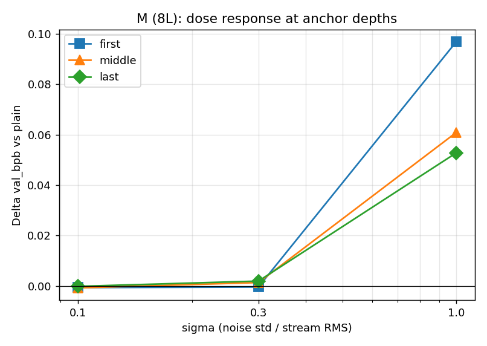
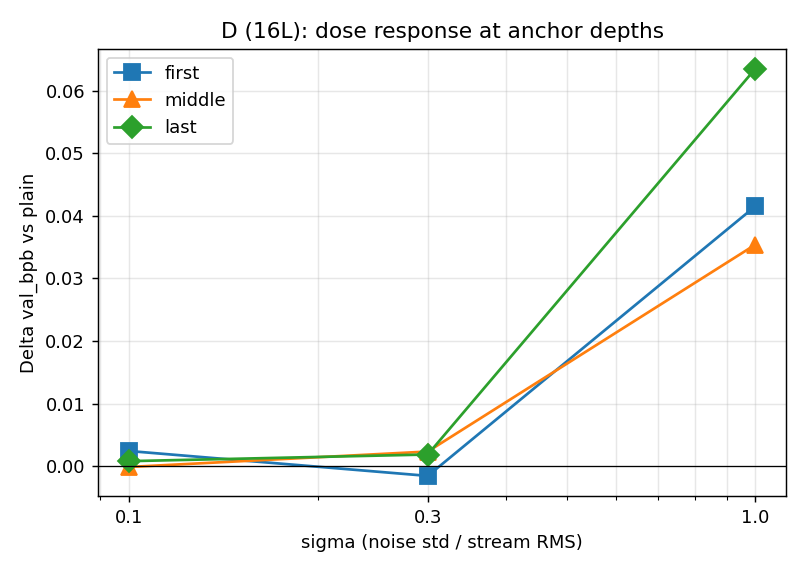
If the effect were pure dose, a layer's damage should scale linearly in sigma and be identical across depths. If middle layers are denser, their dose curve should be steeper.
06What are the layers actually carrying?
The hypothesis predicts middle layers hold irreplaceable information. Two direct probes of the plain model: ablate the sublayer output (how much loss jumps) and the logit lens (how much each layer moves the stream toward the final prediction).
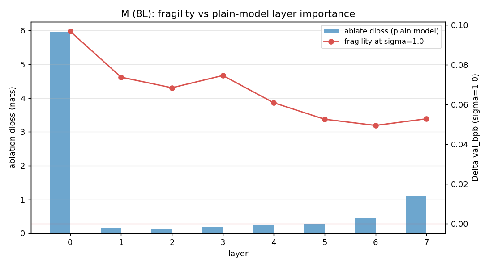
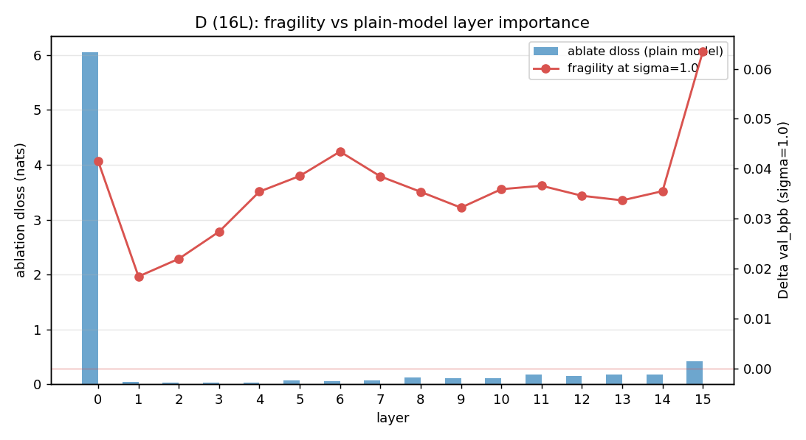
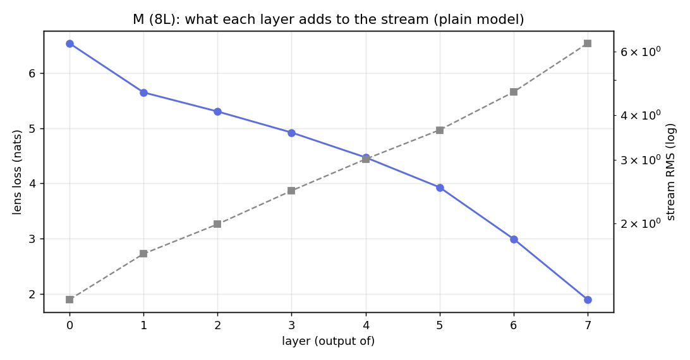
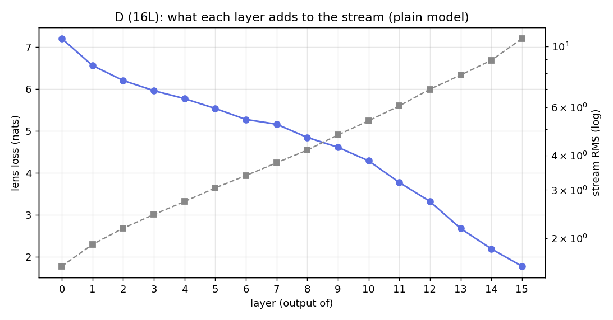
Does importance predict fragility?
| curve | ρ(fragility, ablate dloss) | p | ρ(fragility, lens marginal) | ρ(fragility, out-proj scale) | ρ(ablate, scale) |
|---|---|---|---|---|---|
| s100 | -0.167 | +0.697 | -0.048 | -0.857 | +0.310 |
| s30 | -0.405 | +0.334 | -0.524 | -0.190 | +0.310 |
If fragility tracks importance (ablation/lens), that is a density story. If it tracks output scale more strongly, that is a bookkeeping story (bigger writers feel their noise more). The ablate↔scale column tells you how much of the importance curve is just scale.
| curve | ρ(fragility, ablate dloss) | p | ρ(fragility, lens marginal) | ρ(fragility, out-proj scale) | ρ(ablate, scale) |
|---|---|---|---|---|---|
| s100 | +0.418 | +0.129 | -0.103 | +0.194 | +0.594 |
| s30 | -0.697 | +0.006 | -0.753 | -0.553 | +0.594 |
If fragility tracks importance (ablation/lens), that is a density story. If it tracks output scale more strongly, that is a bookkeeping story (bigger writers feel their noise more). The ablate↔scale column tells you how much of the importance curve is just scale.
Test-time sensitivity: what the final model depends on
A complementary probe with no retraining: take the plain model, add a Gaussian perturbation
(same σ grid, RMS-scaled) to each slice of the stream at eval time only, and measure the jump in
val_bpb. This is the static, dependency-side view of the same question — if the final
predictions depend on the middle of the stream most, the middle should be the most sensitive. If the
train-time and test-time profiles agree, the middle layers matter in both senses; if they disagree, the
train-time effect is adaptation/regularisation, not static importance.
M (8L)
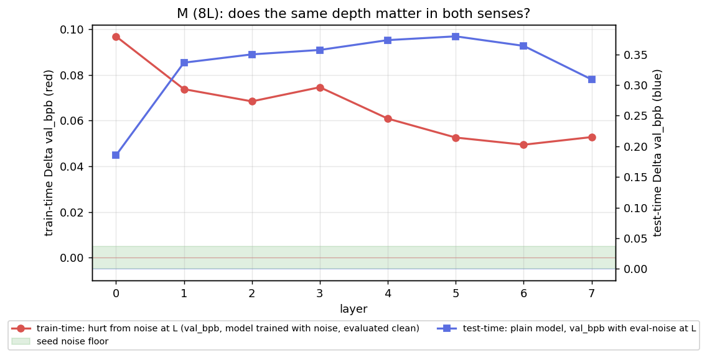
| σ | ρ vs linear bump | p | ρ vs gauss bump | p | peak L | min L | ρ vs ablation | p | ρ vs lens | ρ vs out-proj scale | ρ vs train-time fragility |
|---|---|---|---|---|---|---|---|---|---|---|---|
| sig10 | +0.000 | 1.000 | +0.000 | 1.000 | 7 | 0 | +0.310 | 0.465 | +0.095 | +1.000 | — |
| sig100 | +0.732 | 0.059 | +0.732 | 0.056 | 5 | 0 | -0.262 | 0.538 | -0.524 | +0.429 | -0.595 |
| sig30 | +0.000 | 1.000 | +0.000 | 1.000 | 7 | 0 | +0.310 | 0.467 | +0.095 | +1.000 | -0.190 |
Sensitivity = Δval_bpb of the plain model when one stream slice is noised at eval time. Peak/min = the most/least sensitive layer. Correlations test which story fits: a density story predicts high ρ with ablation/lens; a bookkeeping story predicts high ρ with output-projection scale.
D (16L)
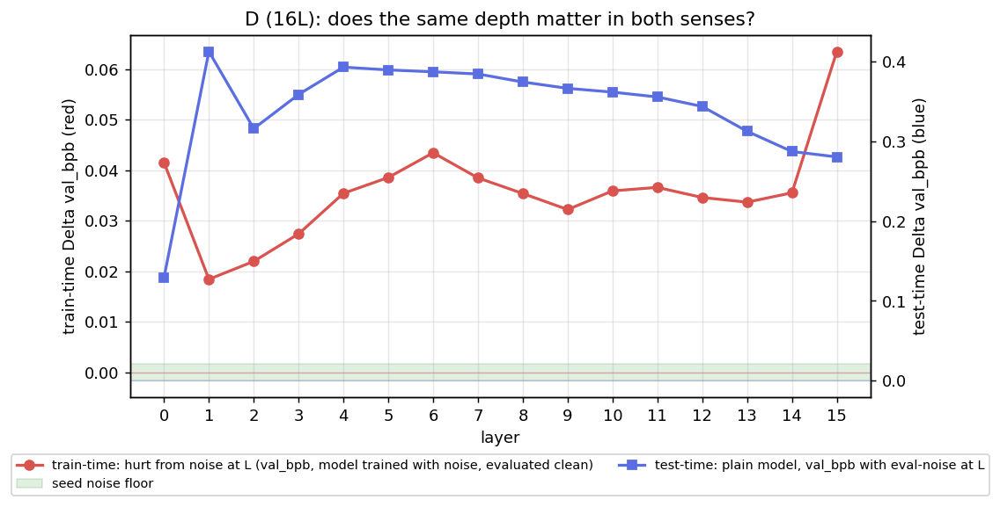
| σ | ρ vs linear bump | p | ρ vs gauss bump | p | peak L | min L | ρ vs ablation | p | ρ vs lens | ρ vs out-proj scale | ρ vs train-time fragility |
|---|---|---|---|---|---|---|---|---|---|---|---|
| sig10 | +0.006 | 0.995 | +0.006 | 0.989 | 15 | 0 | +0.585 | 0.019 | +0.112 | +0.982 | — |
| sig100 | +0.621 | 0.010 | +0.621 | 0.008 | 1 | 0 | -0.721 | 0.004 | -0.574 | -0.394 | -0.153 |
| sig30 | +0.018 | 0.955 | +0.018 | 0.963 | 15 | 0 | +0.579 | 0.022 | +0.109 | +0.979 | -0.512 |
Sensitivity = Δval_bpb of the plain model when one stream slice is noised at eval time. Peak/min = the most/least sensitive layer. Correlations test which story fits: a density story predicts high ρ with ablation/lens; a bookkeeping story predicts high ρ with output-projection scale.
Output-projection weight norm is a confound: bigger attn.proj/mlp.down
means the sublayer writes more into the stream, so (a) its noise matters more and (b) its ablation looks
worse. Correlating fragility against that norm is the null we must clear before claiming a
computational story about the middle. M (8L, ~29M params) and D (16L, ~55M params), same width (d=512), same corpus (edu_mix, 531M tokens) and optimizer. Depth is the only thing that changes between the two, so a pattern that holds at both scales is a depth effect, not a size effect. Key results: the test-time information-density profile (middle densest) holds at both scales, while the training-time learning-disruption ranking is scale-dependent — the 8L model is disrupted most by first-layer noise, the 16L model most by last-layer noise.
07Or is the noise just a regulariser?
The 1 MB corpus is small enough that every run overfits a little, so noise could be doing the standard regulariser's job: lowering val loss by keeping the model from memorising. The signature of that is a smaller gen_gap, and — crucially — no depth pattern.
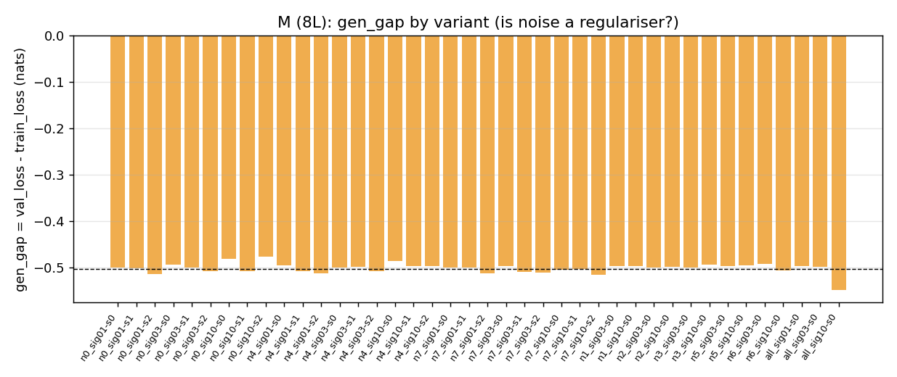
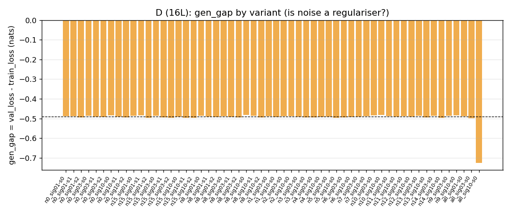
M (8L)
Plain gen_gap: -0.5033 nats. Variants beating plain by >1 floor: ['n6_sig03-s0'].
| variant | gen_gap (nats) |
|---|---|
| all_sig01-s0 | -0.49706 |
| all_sig03-s0 | -0.4982 |
| all_sig10-s0 | -0.54829 |
| n0_sig01-s0 | -0.50022 |
| n0_sig01-s1 | -0.50238 |
| n0_sig01-s2 | -0.51401 |
| n0_sig03-s0 | -0.49428 |
| n0_sig03-s1 | -0.50052 |
| n0_sig03-s2 | -0.50763 |
| n0_sig10-s0 | -0.48122 |
| n0_sig10-s1 | -0.50771 |
| n0_sig10-s2 | -0.47683 |
| n1_sig03-s0 | -0.49754 |
| n1_sig10-s0 | -0.4975 |
| n2_sig03-s0 | -0.50055 |
| n2_sig10-s0 | -0.49893 |
| n3_sig03-s0 | -0.50002 |
| n3_sig10-s0 | -0.49316 |
| n4_sig01-s0 | -0.49561 |
| n4_sig01-s1 | -0.50801 |
| n4_sig01-s2 | -0.51323 |
| n4_sig03-s0 | -0.50024 |
| n4_sig03-s1 | -0.49893 |
| n4_sig03-s2 | -0.50842 |
| n4_sig10-s0 | -0.4856 |
| n4_sig10-s1 | -0.49683 |
| n4_sig10-s2 | -0.49695 |
| n5_sig03-s0 | -0.49736 |
| n5_sig10-s0 | -0.49582 |
| n6_sig03-s0 | -0.49301 |
| n6_sig10-s0 | -0.50562 |
| n7_sig01-s0 | -0.49981 |
| n7_sig01-s1 | -0.49991 |
| n7_sig01-s2 | -0.51327 |
| n7_sig03-s0 | -0.49754 |
| n7_sig03-s1 | -0.50911 |
| n7_sig03-s2 | -0.51085 |
| n7_sig10-s0 | -0.50418 |
| n7_sig10-s1 | -0.504 |
| n7_sig10-s2 | -0.51508 |
global_vs_mid_sig10: global Δ = -0.0015, mid-only Δ = -0.0008 → global is 1.94× the mid effect (pure-dose expectation ≈ 8× if damage adds per layer). A ratio far below pure dose means per-layer damage does not add — location matters.
global_vs_mid_sig30: global Δ = +0.0281, mid-only Δ = +0.0013 → global is 21.16× the mid effect (pure-dose expectation ≈ 8× if damage adds per layer). A ratio far below pure dose means per-layer damage does not add — location matters.
global_vs_mid_sig100: global Δ = +0.4078, mid-only Δ = +0.0609 → global is 6.70× the mid effect (pure-dose expectation ≈ 8× if damage adds per layer). A ratio far below pure dose means per-layer damage does not add — location matters.
Plain ends at train loss 3.2995 / val 1.8961. Noise variants ending at higher train loss are consistent with noise capping what the model memorises (a regulariser); ending at similar train loss but worse val is a capability loss (density).
D (16L)
Plain gen_gap: -0.4904 nats. Variants beating plain by >1 floor: ['n0_sig03-s0', 'n0_sig03-s0', 'n10_sig03-s0', 'n11_sig03-s0', 'n12_sig03-s0', 'n13_sig03-s0', 'n14_sig03-s0'].
| variant | gen_gap (nats) |
|---|---|
| all_sig01-s0 | -0.48848 |
| all_sig03-s0 | -0.49791 |
| all_sig10-s0 | -0.72477 |
| n0_sig01-s0 | -0.48864 |
| n0_sig01-s1 | -0.48879 |
| n0_sig01-s2 | -0.4955 |
| n0_sig03-s0 | -0.48518 |
| n0_sig03-s1 | -0.49003 |
| n0_sig03-s2 | -0.49297 |
| n0_sig10-s0 | -0.48499 |
| n0_sig10-s1 | -0.49114 |
| n0_sig10-s2 | -0.49445 |
| n10_sig03-s0 | -0.4834 |
| n10_sig10-s0 | -0.48292 |
| n11_sig03-s0 | -0.48756 |
| n11_sig10-s0 | -0.48946 |
| n12_sig03-s0 | -0.48872 |
| n12_sig10-s0 | -0.48994 |
| n13_sig03-s0 | -0.48688 |
| n13_sig10-s0 | -0.49439 |
| n14_sig03-s0 | -0.48519 |
| n14_sig10-s0 | -0.49581 |
| n15_sig01-s0 | -0.48634 |
| n15_sig01-s1 | -0.48353 |
| n15_sig01-s2 | -0.49701 |
| n15_sig03-s0 | -0.48692 |
| n15_sig03-s1 | -0.49554 |
| n15_sig03-s2 | -0.49702 |
| n15_sig10-s0 | -0.4909 |
| n15_sig10-s1 | -0.49734 |
| n15_sig10-s2 | -0.49588 |
| n1_sig03-s0 | -0.48916 |
| n1_sig10-s0 | -0.49225 |
| n2_sig03-s0 | -0.4892 |
| n2_sig10-s0 | -0.48735 |
| n3_sig03-s0 | -0.48975 |
| n3_sig10-s0 | -0.4951 |
| n4_sig03-s0 | -0.49347 |
| n4_sig10-s0 | -0.49145 |
| n5_sig03-s0 | -0.48991 |
| n5_sig10-s0 | -0.49727 |
| n6_sig03-s0 | -0.4955 |
| n6_sig10-s0 | -0.49146 |
| n7_sig03-s0 | -0.49066 |
| n7_sig10-s0 | -0.48905 |
| n8_sig01-s0 | -0.48568 |
| n8_sig01-s1 | -0.49004 |
| n8_sig01-s2 | -0.4933 |
| n8_sig03-s0 | -0.48924 |
| n8_sig03-s1 | -0.49257 |
| n8_sig03-s2 | -0.4943 |
| n8_sig10-s0 | -0.48272 |
| n8_sig10-s1 | -0.48655 |
| n8_sig10-s2 | -0.49414 |
| n9_sig03-s0 | -0.48697 |
| n9_sig10-s0 | -0.4831 |
global_vs_mid_sig10: global Δ = +0.0027, mid-only Δ = -0.0001 → global is -19.16× the mid effect (pure-dose expectation ≈ 16× if damage adds per layer). A ratio far below pure dose means per-layer damage does not add — location matters.
global_vs_mid_sig30: global Δ = +0.0597, mid-only Δ = +0.0023 → global is 25.64× the mid effect (pure-dose expectation ≈ 16× if damage adds per layer). A ratio far below pure dose means per-layer damage does not add — location matters.
global_vs_mid_sig100: global Δ = +1.4774, mid-only Δ = +0.0354 → global is 41.76× the mid effect (pure-dose expectation ≈ 16× if damage adds per layer). A ratio far below pure dose means per-layer damage does not add — location matters.
Plain ends at train loss 3.1222 / val 1.7812. Noise variants ending at higher train loss are consistent with noise capping what the model memorises (a regulariser); ending at similar train loss but worse val is a capability loss (density).
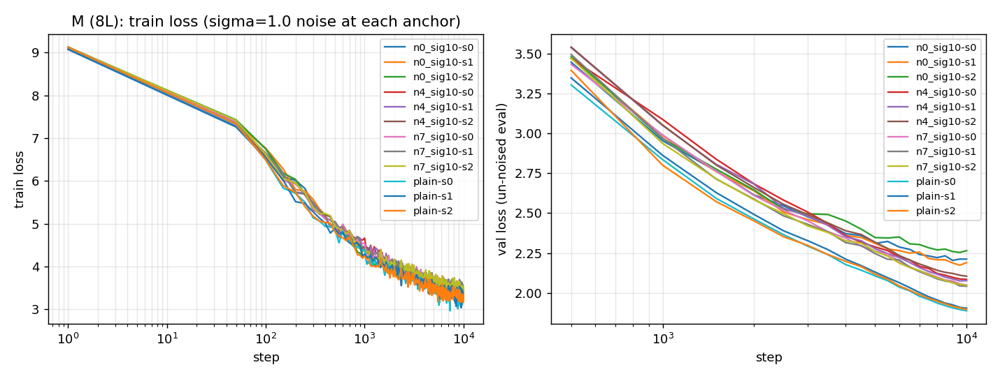
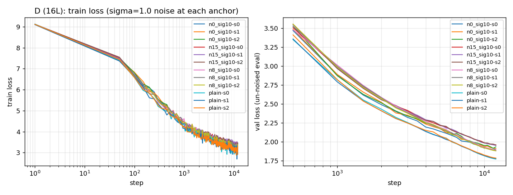
08Answer: does information density vary by depth?
The question (does information density vary by depth?) — yes, clearly. The most reliable probe is eval-time slice sensitivity: load a trained model, inject RMS-scaled Gaussian noise into one slice of the residual stream, and measure the immediate damage to val_bpb. There is no learning involved — it is a direct probe of the final function. The damage is largest in the middle layers and smallest at the first layer, at both the 8L and 16L scale (3 seeds each). The middle carries the least redundant information; the first layer is the most redundant. This is the clean, scale-robust answer to the density question.
Important reinterpretation of the training-time fragility. When we decompose the training-time val penalty into 'learned less' (train NLL rise) vs 'generalises worse' (gen_gap = val_nll − train_nll), across all 18 noise runs (2 scales × 3 anchors × 3 seeds) at σ=1.0 the gen_gap is essentially constant (−0.48 to −0.52) and Δval ≈ Δtrain. So the entire val_bpb penalty is a learning-speed / underfitting effect: noise slows learning (train NLL rises) and val rises by exactly the same amount. There is no differential generalisation penalty. The training-time 'fragility' is therefore a depth- and scale-dependent learning-disruption effect, not a pure measure of how much information each layer carries. The original hypothesis conflated these two; they are distinct and have different depth profiles:
- Test-time information density (clean probe): middle densest, first most redundant — both scales. This is the reliable density result.
- Training-time learning disruption (σ=1.0): how much perturbing each layer's stream during training degrades the final model. 8L: first layer disrupts most (first > middle > last, ~11–20× the floor). 16L: last layer disrupts most (last > first > middle, ~17–38× the floor). Scale-dependent, and it does not match the density profile.
The weaker-noise cells (σ=0.1, σ=0.3) are mostly within ~1–2× the seed floor and should be read as suggestive, not conclusive — the 'middle most fragile at moderate noise' (16L) is only ~2× the floor, and a few right-of-mid 16L layers are even helped (negative deltas) in single-seed profile runs. The robust, defensible results are the test-time density profile and the σ=1.0 learning-disruption ranking.
Reading it carefully
- Reliability is tiered. Robust (high confidence): the test-time information-density profile (middle densest, first most redundant; both scales, 3 seeds, large effect) and the σ=1.0 learning-disruption ranking (11–38× the seed floor, consistent across 3 seeds). Marginal (low–medium confidence): the σ=0.1 and σ=0.3 effects, mostly within ~1–2× the seed floor; the 'middle most fragile at moderate noise' (16L) is only ~2× the floor, and a few 16L right-of-mid layers are helped by noise in single-seed profile runs (within the noise range).
- Training-time fragility is a learning-disruption effect, not pure information loss. gen_gap (val_nll − train_nll) is constant (−0.48 to −0.52) across all 18 σ=1.0 noise runs and Δval ≈ Δtrain: the model simply learned less, and val rose by the same amount. There is no differential generalisation penalty. Read the depth profile of the training penalty as 'how much perturbing that layer disrupts learning', not 'how much information that layer carries'.
- Undertrained, not overfit. Each model sees only ~0.31–0.37 epochs of the 531M-token corpus (M: 164M, D: 197M tokens). This is NOT the 1MB-overfit regime, so the 'generic regulariser on a tiny overfit corpus' explanation does not apply — but the models are also not converged, so the effects are measured in the early-learning regime and may shift in a fully-converged model.
- Small models, single corpus. 29M and 55M params, educational text (edu_mix). The density finding holding at both scales argues it is a depth effect, not a size artefact, but both are small by LLM standards and the domain is narrow. Extrapolation to large, diverse-data models is open.
- σ is a relative dose (noise std = that slice's own RMS), comparable across depths, but the absolute perturbation energy differs because stream RMS grows 5–7× from first to last layer (the last layer takes the largest absolute noise). Recorded in the resid_rms profile.
- One layer noised per run (except global controls); cross-layer interactions are not measured. The global σ=1.0 control shows damage accumulates super-additively (M Δ=+0.41, D Δ=+1.48 bpb, far above any single layer).
- Seed floor differs by scale (M ±0.0049, D ±0.0017 bpb), so 'robust' is judged relative to each scale's own floor. Profile cells use a single seed; core cells (first/mid/last) use three; the anchor test pools core+profile (4 paired seeds).
09Reproduce
Runs: /data/susanket/text/gpt/runs/depth_*. Each run dir has its own
config.yaml, metrics.jsonl, eval.json, plugin snapshot and
checkpoints, so any single run is self-contained and resumable.